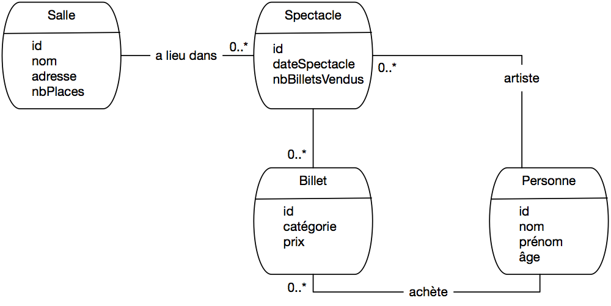
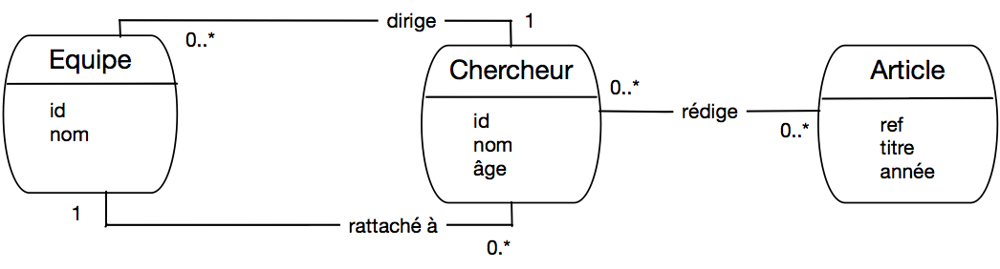
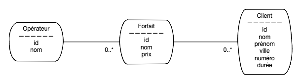

Annales des examens¶
Examen blanc, janvier 2019¶
Le schéma de base de données suivant sera utilisé pour l’ensemble du sujet. Il permet de gérer une plateforme de vente de billets de spectacles en ligne :
Personne(id, nom, prénom, age)
Salle(id, nom, adresse, nbPlaces)
Spectacle (id, idArtiste, idSalle, dateSpectacle, nbBilletsVendus)
Billet (id, idSpectateur, idSpectacle, catégorie, prix)
Notez que les artistes et les spectateurs sont des personnes. Tous les attributs id sont des clés primaires, ceux commençant par id sont des clés étrangères.
Conception (5 points)¶
Donnez le modèle entité / association correspondant au schéma de notre base.
Pensez-vous qu’une association a été réifiée? Si oui, laquelle?
Donnez la commande de création de la table
SpectacleOn veut qu’un même spectateur puisse avoir au plus un billet pour un spectacle. Quelle dépendance fonctionnelle cela ajoute-t-il? Que proposez-vous pour en tenir compte dans le schéma?
SQL (6 points)¶
Question de cours. Deux requêtes syntaxiquement différentes sont équivalentes si
Elles peuvent donner le même résultat
Elles donnent toujours le même résultat, quelle que soit la base
Indiquez la bonne réponse.
Donnez les expressions SQL des requêtes suivantes
Noms des artistes âgés d’au moins 70 ans qui ont donné au moins un spectacle dans la salle “Bercy”
Donnez le nom des artistes, des salles où ils se sont produits, triés sur le nombre de billets vendus
Quelles personnes n’ont jamais acheté de billet?
Donnez la liste des spectateurs ayant acheté au moins 10 billets, affichez le nom, le nombre de billets et le prix total.
Algèbre (5 points)¶
Voici 3 relations.
A
B
C
D
1
0
1
2
4
1
2
2
6
2
6
3
7
1
1
3
1
0
1
1
1
1
1
1
Relation R
A
B
E
1
0
2
4
1
2
1
0
7
8
6
6
Relation S
A
B
E
1
0
2
4
2
2
1
0
7
8
6
5
8
5
6
Relation T
Pour quelle requête le résultat contient-il plus d’un nuplet? Attention: souvenez-vous que l’opérateur de projection élimine les doublons.
\(\pi_{A,C} (\sigma_{B=0}(R))\)
\(\pi_{A,C} (\sigma_{D=0}(R))\)
\(\pi_{A,C} (\sigma_{B=0}(R) \cup \sigma_{D=0}(R))\)
\(\pi_{A,C} (\sigma_{A=C}(R)\)
Combien de nuplets retourne la requête \(\pi_{A,B,E} (S \Join_{A=A \land B=B} R)\)?
2
3
4
5
Combien de nuplets retourne la requête \(R \Join_{A=A \land B=B} (S \cup T)\)?
3
5
7
9
Donnez l’expression algébrique pour la requête « Noms et prénoms des spectateurs qui ont acheté au moins une fois un billet de plus de 500 euros. »
Donnez l’expression algébrique pour la requête « Id des personnes qui ne sont pas des artistes »
Transactions (4 points)¶
On prend le schéma donné au début de l’examen.
Question de cours. Quel est le principal inconvénient du mode
serializable?
Le système ne peut exécuter qu’une transaction à la fois
Certaines transactions sont mises en attente avant de pouvoir finir
Certaines transactions sont rejetées par le système
Indiquez la bonne réponse
Exprimez au moins un critère de cohérence de cette base
On écrit une procédure de réservation d’un billet pour un spectacle.
Reserver (v_idSpectateur, v_idSpectacle, v_categorie,v_ prix) # Requête SQL de mise à jour du spectacle requêteA # Requête SQL d'insertion du billet requêteB
Donnez les deux requêtes SQL, indiquez l’emplacement du commit
et justifiez-les brièvement.
Correction de l’examen¶
Conception¶
Le schéma E/A est donné dans la Fig. 73. Notez que l’on ne représente pas les clés étrangères comme attributs des entités: les clés étrangères sont le mécanisme du modèle relationnel pour représenter les liens entre entités. Dans le modele EA, ces liens sont des associations, et il serait donc redondant de faire figure également les clés étrangères
Le nommage des assocations et des attributs est libre, l’important est de privilégier la clarté et la précision, notamment pour les associations.
{kind=link}

Fig. 73 Le schéma E/A après rétro-conception¶
Le type d’entité Billet est issu d’une réification d’une association plusieurs-plusieurs. La principale
différence est que les billets ont maintenant leur identifiant propre, alors que l’association plusieurs-plusieurs
est identifiée par la paire (idSpectacle, idPersonne).
Voici la commande de création de la salle. On a choisi de mettre not null partout
pour maximiser la qualité de la base, ce sont des contraintes que l’on peut facilement
lever si nécessaire.
create table Spectacle (id integer not null,
idArtiste integer not null,
idSalle integer not null,
dateSpectacle date not null,
nbBilletsVendus integer not null,
primary key (id),
foreign key (idArtiste) references Personne (id),
foreign key (idSalle) references Salle (id)
)
Dans le schéma relationnel proposé, il est possible d’avoir plusieurs billets (avec des identifiants distincts) pour le même spectacle et le même spectateur. C’est un effet de la réification: on a perdu la contrainte d’unicité sur la paire (idSpectacle, idPersonne).
On peut se poser la question d’ajouter ou non cette contrainte. Si oui, alors
(idSpectacle, idSpectateur) devient une clé secondaire, que l’on déclare avec
la clause unique dans la commande de création de la table Billet.
create table Billet (id integer not null,
idSpectacle integer not null,
idSpectateur integer not null,
catégorie varchar(4) not null,
prix float non null,
primary key (id),
unique (idSpectacle, idSpectateur),
foreign key (idSpectacle) references Spectacle (id),
foreign key (idSpectateur) references Personne (id)
)
SQL¶
Deux requêtes sont équivalentes si elles donnent toujours le même résultat, quelle que soit la base.
select p.nom
from Personne as p, Spectacle s, Salle l
where p.id = s.idArtiste and s.idSalle = l.id
and l.nom = 'Bercy' and p.age >= 70
select p.nom as nomArtiste, s.nom as nomSalle, sp.nbBilletsVendus
from Peronne as p, Spectacle as sp, Salle as s
where p.id = sp.idArtiste
and sp.idSalle = s.id
order by sp.nbBilletsVendus
select prénom, nom
from Personne as p
where not exists (select '' from Billet where idSpectateur = p.id)
select p.nom, count(*), sum(prix)
from Personne as p, Billet as b
where p.id = b.idSpectateur
group by p.id, p.nom
having count(*) >= 10
Algèbre¶
La requête 4 renvoie 2 nuplets: (1,1) et (6,6)
La requête renvoie 3 nuplets: (1,0,2), (1,0,7) et (4,1,2)
La requête renvoie également 3 nuplets
\(\pi_{nom, prenom}(Personne \underset{id=idSpectateur}{\bowtie} \sigma_{prix > 500}(BILLET))\)
\(\pi_{id}(Personne) - \pi_{idArtiste} (Spectacle)\)
Transactions¶
Le mode sérialisable entraîne des rejets de transactions.
Le nombre de billets vendus (nbBilletsVendus dans Spectacle) pour un spectacle est égal au nombre
de lignes dans Billet pour ce même spectacle.
Autre possibilité: pas plus de billets vendus que de places dans la salle.
Un update de Spectacle pour incrémenter nbBilletsVendus,
update Spectacle set nbBilletsVendus=nbBilletsVendus+1 where idSpectacle=v_idSpectacle
et un insert dans Billet.
insert into Billet (id, idSpectateur, idSpectacle, catégorie, prix)
value (1234, v_idSpectateur, v_idSpectacle, v_catégorie, v_prix)
Le commit vient à la fin car c’est seulement à ce moment
que la base est à nouveau dans un état cohérent.
Examen session 2, avril 2019¶
Soit la base de données suivante permettant de gérer un championnat de football.
Stade(id, ville, nom, nbPlaces, prixBillet)
Equipe(id, pays, siteWeb, entraîneur)
Joueur(id, idEquipe, nom, prénom, âge)
Match(id, idStade, dateMatch, idEquipe1, idEquipe2, scoreEquipe1, scoreEquipe2, nbBilletsVendus)
But(idJoueur, idMatch, minute, penalty)
Tous les attributs en gras sont des clés primaires, ceux en italiques sont des clés étrangères. Notez qu’une clé étrangère peut faire partie d’une clé primaire.
Chaque pays a une seule équipe en compétition. Une ville peut avoir plusieurs stades.
L’attribut But.penalty vaut VRAI si le but a été marqué suite a un penalty (coup de pied de réparation) ou
FAUX dans le cas contraire. Le nom de l’entraîneur d’une équipe est donné par l’attribut Equipe(entraîneur).
Conception (6 points)¶
Etudions la conception de cette base en répondant aux questions suivantes.
Avec ce schéma, une équipe peut-elle jouer contre elle-même? Expliquez.
Avec ce schéma, un joueur peut-il marquer un but dans un match auquel son équipe ne participe pas? Expliquez.
Est-il possible de savoir dans quelle ville a été marqué chaque but? Expliquez.
Donnez le schéma entité-association correspondant aux relations
Match,Equipe,Stade.Donnez la commande SQL de création de la table
Match.Citer au moins une clé candidate autre que la clé primaire parmi les attributs des tables (bien lire l’énoncé). Quel serait l’impact si on la choisissait comme clé primaire?
Un de vos collègues propose de modéliser un but comme une association plusieurs-plusieurs entre un joueur et un match. Cela vous semble-t-il une bonne idée? Cela correspond-il au schéma relationnel de notre base?
SQL (8 points)¶
Exprimez les requêtes suivantes en SQL.
Noms des joueurs âgés de plus de 30 ans qui ont marqué un but dans la première minute de jeu.
Noms des joueurs français qui n’ont marqué aucun but
Le prix du billet le plus cher
Donnez le nom des entraineurs avec le nombre de buts marqués par leur équipe
Donnez le nom des joueurs ayant marqué un but dans un match auquel leur équipe ne participe pas.
Les noms des joueurs français qui ont marqué un but lors d’un match entre la France et la Suisse joué à Lille. Attention: dans la table
Matchla France peut être l’équipe 1 ou l’équipe 2. Il faut construire la requête qui correspond aux deux cas.
Algèbre (3 points)¶
Donnez l’expression algébrique de la première requête SQL (section précédente)
Donnez l’expression algébrique pour la seconde requête (les joueurs français qui ne marquent pas)
Donnez la requête SQL correspondant à l’expression algébrique suivante et expliquez le sens de cette requête
Programmation et transactions (3 points)¶
Parmi les phrases suivantes, lesquelles vous semblent exprimer une contrainte de cohérence correcte sur la base de données?
Pour chaque match nul, je dois trouver autant de lignes associées au match dans la table
Butpour l’équipe 1 et pour l’équipe 2.Quand j’insère une ligne dans la table
Butpour l’équipe 1, je dois effectuer également une insertion pour l’équipe 2 dans la tableBut.Si je trouve une ligne dans la table
Matchavecid=x,scoreEquipe1=yetscoreEquipe2=z, alors je dois trouvery+zlignes dans la tableButavecidMatch=x.
Voici un programme en pseudo-code simplifié à exécuter chaque fois qu’un but est marqué dans un match, par un joueur et au bénéfice de la première équipe. Les “#” marquent des commentaires.
function marquer_but_eq1 (imatch, ijoueur, min, peno) startTransaction # A select scoreEquipe1 into :scoreE where idMatch = :imatch #B update Match set scoreEquipe1 = :scoreE + 1 where idMatch = :imatch # C insert into But (idMatch, idJoueur, minute, penalty) values (:idMatch, :ijoueur, :min, :peno) # D
Où faut-il selon-vous ajouter un ordre commit?
Juste après
BetCJuste après
AJuste après
D
Justifiez votre réponse.
Supposons que je lance deux exécutions de marquer_but_eq1 en même temps.
Dans quel scénario l’exécution imbriquée amène-t-elle une incohérence?
Corrigé¶
Conception¶
Oui, la base permet de représenter un but marqué dans un match opposant deux équipes dont aucune n’est celle du joueur.
Oui, par transitivité \(But \to Match\), \(Match \to Stade\) et \(Stade \to Ville\).
Schéma
CREATE TABLE Match( id NUMBER(10), idStade NUMBER(10), dateMatch DATE, idEquipe1 NUMBER(10), idEquipe2 NUMBER(10), scoreEquipe1 NUMBER(10), scoreEquipe2 NUMBER(10), PRIMARY key (id), foreign key (idStade) REFERENCES Stade(id), foreign key (idEquipe1) REFERENCES Equipe(id), foreign key (idEquipe2) REFERENCES Equipe(id) );Le pays est clé candidate pour l’équipe. Il faudrait alors l’utiliser comme clé étrangère partout.
SQL¶
select nom
from Joueur as j, But as b
where j.id = b.idJoueur and j.age > 30 and b.minute = 1;
select nom
from Joueur as j, Equipe as e
where j.idEquipe = e.id
and e.pays = 'France'
and j.id not IN (select idJoueur from But);
select prixBillet
from Stade as s1
where not exists (select ''
from Stade as s2
where s2.prixBillet > s1.prixBillet);
select entraineur, count(*)
from Equipe as e, Joueur as j, But as b
where e.id=j.idEquipe
and b.idJoueur = j.id
group by e.id, e.entraineur;
select prénom, nom
from Match as m, Joueur as j, But as b
where e.id=j.idEquipe
and b.idJoueur = j.id
and m.id = b.idMatch
and e.id != m.idEquipe1
and e.id != e.idEquipe2
Il faut soit Match.equipe1=”France”, soit Match.equipe2=”France”.
select j.nom
from Match m, Equipe e1, Equipe e2, Joueur j, Stade s, But b
where m.idEquipe1 = e1.id
and m.idEquipe2 = e2
and ((e1.pays = 'France' id and e2.pays='Suisse' and e1.id = j.idEquipe)
or
(e2.pays = 'France' id and e1.pays='Suisse' and e2.id = j.idEquipe))
and m.idStade = s.id
and s.ville = 'Lille'
and b.idJoueur = j.id
and b.idMatch = m.id )
Algèbre¶
Joueurs français:
Joueurs français qui ont marqué au moins un but :
Résultat:
Les matchs nuls 0-0 pour lequel il existe quand même un but.
select idMatch
from But as b, Match as m
where b.idMatch=m.id
and m.scoreEquipe1=0
and m.scoreEquipe2=0
Examen session 1, présentiel, juillet 2019¶
{kind=link}

Fig. 74 Un laboratoire d’informatique¶
On cherche à modéliser un laboratoire d’informatique afin de pouvoir gérer ses équipes, ses chercheurs et leurs publications (articles). L’analyse donne le schéma entité/association de la Fig. 74. À partir de cette analyse, quelqu’un propose le schéma relationnel suivant, dans lequel les clés primaires sont en gras (à vous de trouver les clés étrangères):
Equipe (id, nom, idDirecteur)
Chercheur (id, nom, âge, idEquipe)
Article (réf, titre, année)
Rédige (idChercheur, réfArticle)
Conception (6 points)¶
Ce schéma relationnel représente-t-il correctement le modèle conceptuel de la Fig. 74? Vérifiez les clés primaires et étrangères et proposez éventuellement des corrections.
On veut ajouter la position d’un chercheur dans l’ordre des auteurs pour un article. Où placer cette information, dans le modèle entité association et dans le modèle relationnel?
Un article peut-il être rédigé par des chercheurs appartenant à des équipes différentes (justifiez)?
Un chercheur peut-il diriger une équipe à laquelle il n’est pas rattaché (justifiez)?
Donnez les commandes
create tablepour les tablesChercheur,ArticleetRédige(en tenant compte des corrections éventuelles de la question 1).
SQL (8 points)¶
Exprimez les requêtes suivantes en SQL.
Noms des chercheurs de l’équipe nommée
VertigoTitre des articles parus depuis 2015 dont l’un au moins des auteurs appartient à l’équipe
ROCQuels articles n’ont pas d’auteur?
Titre des articles parus depuis 2015 dont tous les auteurs appartiennent à l’équipe
ROC(aide: la quantification universelle se remplace par la quantification existentielle et la négation)Nom des chercheurs qui dirigent une équipe à laquelle ils n’appartiennent pas
Nom des chercheurs qui dirigent plus d’une équipe.
Algèbre (3 points)¶
Donnez l’expression algébrique pour les deux premières requêtes SQL (section précédente)
Donnez la requête SQL correspondant à l’expression algébrique suivante et expliquez-en le sens.
\[\pi_{id} (Chercheur) - \pi_{idChercheur} (R\acute{e}dige)\]
Valeurs nulles (2 pts)¶
Le tableau suivant montre une instance de Article. Les cellules
blanches indiquent des valeurs inconnues.
réf |
titre |
année |
|---|---|---|
AR243 |
Les ordinateurs pensent-ils? |
2018 |
AR254 |
Money for nothing |
|
AR20 |
2010 |
Donnez le résultat des requêtes suivantes:
select réf from Article where année > 2015;
select réf from Article where année <= 2015;
select réf from Article where annee > 0 or titre is not null;
select réf from Article where (année < 2015 or année IS null)
and titre like `%`
Transactions (1 pt)¶
Soit deux transactions concurrentes \(T_1\) et \(T_2\). Quelle(s) affirmation(s), parmi les suivantes, est (sont) vraie(s) dans un système transactionnel assurant les propriétés ACID en isolation complète.
Si \(T_2\) débute après \(T_1\), \(T_1\) ne voit jamais les mises à jour de \(T_2\).
\(T_1\) ne voit pas ses propres mises à jour tant qu’elle n’a pas validé.
Si \(T_2\) débute après \(T_1\), \(T_1\) ne voit les mises à jour de \(T_2\) qu’après que \(T_2\) a effectué un
commit.Si \(T_1\) et \(T_2\) veulent modifier le même nuplet, cela déclenche un interblocage (
deadlock).
Examen session 2, présentiel, septembre 2020¶
Voici une partie de la base de données utilisée pour gérer des œuvres dans un musée:
Oeuvre(idOeuvre, nom, idPropriétaire, idAuteur)
Personne(idPersonne, nom, prénom)
Expertise(idExpertise, idOeuvre, idExpert, valeur)
Les auteurs, les propriétaires et les experts sont des personnes bien entendu. Les clés primaires sont en gras, les clés primaires ne sont pas explicitement indiquées.
Schéma relationnel (6 points)¶
Pour chaque table, donner les dépendances fonctionnelles liant les clés primaires et clés étrangères (1 point)
En déduire les associations de type plusieurs à 1 du schéma Entité/Association correspondant à ce schéma relationnel (1 point)
Donner ce schéma Entité/Association complet (1 point)
Donner des commandes SQL permettant de créer les tables
OeuvreetPersonne(1 point)J’ajoute la contrainte Un expert ne peut évaluer une œuvre qu’une seule fois. Quelle est la dépendance fonctionnelle correspondante et quel changement du schéma relationnel proposez-vous? (1 point)
Ce schéma permet-il de représenter le fait qu’une personne peut être à la fois propriétaire et auteur d’une même œuvre? Argumentez votre réponse. (1 point)
SQL (7 points)¶
Donner le nom du propriétaire et le nom de l’auteur pour l’œuvre dont l’identifiant est “fg65”.
Donner les noms des œuvres expertisées par leur propriétaire
Donner les noms et prénoms des propriétaires d’une œuvre qui n’ont jamais effectué d’expertise.
Donner les œuvres et le nom des personnes qui n’en sont ni propriétaire, ni auteur.
Donner les noms et prénoms des personnes qui sont à la fois auteur, propriétaire et expert (mais pas forcément de la même œuvre).
Pour chaque œuvre donnez la moyenne des valeurs estimées par les experts.
Donnez le nombre d’expertises pour les œuvres dont la valeur maximale estimée est de 10 000 Euros
Un peu de logique (3 points)¶
On dispose de deux prédicats \(Auteur(x)\) et \(Prop(x)\) qui sont vrais si, respectivement, \(x\) est auteur ou \(x\) est propriétaire.
Quelle formule exprime la condition « Soit \(x\) est propriétaire, soit \(x\) est auteur mais pas les deux »
Quelle est la négation de l’énoncé : « Soit \(x\) est propriétaire, soit \(x\) est auteur »
Comment exprimer l’énoncé suivant sans implication: « Si \(x\) est auteur, alors \(x\) n’est pas propriétaire » (utiliser uniquement les connecteurs de SQL: and, or et not).
Algèbre (2 points)¶
On dispose de deux tables \(T_1(A,B,C)\) et \(T_2(D,E,F)\). Donnez une expression algébrique équivalente à la suivante, avec les contraintes suivantes: on peut utiliser la jointure mais pas le produit cartésien, et une sélection doit s’apppliquer directement à une table.
Transactions (2 points)¶
On dispose d’une table \(T (id, valeur)\). Initialement toutes les valeurs sont différentes. Voici une procédure qui échange les valeurs de 2 nuplets.
create or replace procedure Echange (id1 INT, id2 INT) AS
-- Déclaration des variables
val1, val2 integer;
begin
-- On recherche la valeur de id1 et de id2
select valeur into val1 from T where id = id1
select valeur into val2 from T where id = id2
-- On échange les valeurs
update T SET valeur = val1 where id = id2
update T SET valeur = val2 where id = id1
end;
On est en mode Autocommit: un commit a lieu après chaque requête SQL. Expliquez
dans quel scénario l’exécution concurrente de deux procédures d’échange peut aboutir
à ce que deux nuplets aient la même valeur.
Examen session 1, FOAD, janvier 2022¶
Le schéma de base de données suivant sera utilisé pour l’ensemble du sujet. Il permet de gérer les souscriptions pour un ensemble d’opérateurs de téléphonie mobile. Ce schéma sera nommé schéma final par la suite.
Opérateur (id, nom)
Forfait (id, nom, idOpérateur, prix)
Client(id, nom, prénom, ville)
Souscription(idClient, idForfait, durée, numéro)
Résiliation (id, dateResiliation, portabilité, idNouvelleSouscription)
L’attribut durée est un entier positif exprimant le nombre de mois d’engagement. les clés étrangères ne sont pas indiquées.
Conception (8 points)¶
La Fig. 75 montre une modélisation initiale de la base par un schéma entité association.
{kind=link}

Fig. 75 Modélisation initiale de la base¶
Questions:
Donnez la liste des dépendances fonctionnelles définies par ce schéma initial (1 pt)
Donnez le schéma relationnel correspondant à la Fig. 75, sous forme simplifiée (Nom de table, liste des attributs en encadrant les clés primaires et en soulignant les clés étrangères) (1 pt)
Quelles sont les différences entre le schéma initial et le schéma final ? À quelle(s) évolution(s) des choix de modélisation ce changement correspond-t-il (2 pts) ?
Dessinez le schéma final sous forme entité-association. Quelles dépendances fonctionnelles ont changé par rapport au schéma initial ? (1 pt)
Dans le schéma final, une réification serait-elle possible? Quels changements impliquerait-elle ? (1 pt)?
Donnez les commandes
create tablepour le schéma final (2 pts)
SQL (7 points)¶
Exprimez en SQL les requêtes suivantes sur le schéma final, donné dans l’énoncé de l’examen.
Nom et prénom des clients qui ont souscrit un forfait avec engagement de plus de 24 mois.
Existe-t-il deux clients qui auraient le même numéro de téléphone pour le même forfait ? Donnez leurs noms et prénoms (des .clients)
Noms des clients qui ont un forfait nommé
Audaceet un autre nommé ``Privilège`
Quels clients n’ont pas souscrit de forfait ?
Quels opérateurs n’ont pas de client à Lyon ?
Donnez le nombre de souscriptions pour chaque forfait de l’opérateur
Violet.Quels clients ont deux souscriptions ou plus ? Donnez le nombre de souscriptions.
Algèbre relationnelle (3 pts)¶
Expliquez ce que fait la requête algébrique suivante, et donnez une expression SQL équivalente
\[\pi_{nom, prenom}(\sigma_{ville='Paris'}(Client) \underset{id=idClient}{\bowtie} (\sigma_{duree > 24}(Souscription) \underset{idForfait=id}{\bowtie} \sigma_{nom='\rm{Audace}'} (Forfait))\]Même question pour l’expression suivante
\[\pi_{c.id, c.nom, c.prenom} (Client) - \pi_{c.id, c.nom, c.prenom} (Client \underset{c.id=s.idClient}{\bowtie} \sigma_{duree \geq 48} (Souscription))\]Voici une expression SQL ``algébrique””
select c.nom, c.prénom from (Client as c join Souscription as s on c.id=s.idClient) join (select * from Forfait as f where nom= 'Audace') on s.idForfait = f.idDonnez une expression SQL « déclarative » équivalente, et sans requête imbriquée.
Jointure externe (2 pts)¶
Que renvoie la requête suivante ?
select c.nom, c.prénom, f.nom
from (Client as c outer join (Souscription as s join Forfait as f
on s.idForfait=f.id)
on c.id = s.idClient
where ville= 'Nantes'

Ce cours de Philippe Rigaux est mis à disposition selon les termes de la licence Creative Commons Attribution - Pas d’Utilisation Commerciale - Partage dans les Mêmes Conditions 4.0 International.
Table Of Contents
- Introduction
- Le modèle relationnel
- SQL, langage déclaratif
- SQL, langage algébrique
- SQL, récapitulatif
- Conception d’une base de données
- Schémas relationnel
- Procédures et déclencheurs
- Transactions
- Une étude de cas
- Annales des examens
Recherche
Saisissez un ou plusieurs mots-clés.